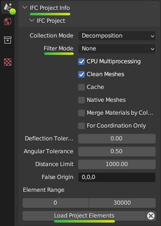

Project Info¶
Scene Properties Project Overview Project Info
Warning
It’s recommended to avoid using the “Unload IFC project” button, as it may promote the misconception that the .blend file can continue without the IFC data. Always start a new Blender session for a clean project start.
The Unload IFC project button will be removed in future versions.
Overview¶
The “Project Info” panel in the “Project Overview” tab of “Scene Properties” of “Properties Editor” provides an overview of the essential information about the currently loaded IFC file or allows users to create a new or load an existing IFC project.
The “Project Info” panel has four distinct modes depending on the state of the IFC project:
There’s also an editing submode in some modes that allows to modify the various metadata of the IFC file i.e. the IFC header section of the file.
Project Setup Mode¶

When no IFC file is loaded or created, the “Project Info” panel displays options to create a new IFC project or load an existing one.
Fields¶
- IFC Schema
Choose between which IFC schema version to use when creating a new project. IFC4 is recommended for all new projects.
The list of IFC specifications can be viewed on the BuildingSMART website.
Supported versions are IFC2X3 (2005), IFC4 (2013) and IFC4X3 (2024).
See also
Use the IFC Class search tool to help choose an IFC Class based on the IFC Schema version.
- Unit System
Choose between metric and imperial units of measurement when creating a project.
- Length Unit
Depending on the unit system, choose the default unit to be used for all length measurements. Lengths are used for moving objects around in the 3D scene, as well as lengths, widths, height, and depth quantity take-off data.
- Area Unit
Depending on the unit system, choose the default unit to be used for all area measurements. Areas are typically used for quantity take-off.
- Volume Unit
Depending on the unit system, choose the default unit to be used for all volume measurements. Volumes are typically used for quantity take-off.
- Template
Choose between starting a completely blank project with no objects, or with preloaded object assets (such as wall types, beam types, etc) that you can use immediately.
Blank: Start with an empty project and no predefined objects.
IFC4 Demo Template: Includes a basic set of common object types like bunny, windows, doors, and other basic elements with complex geometry.
The blank project is recommended for users who want to curate assets, whereas the IFC4 Demo Template is recommended for users wanting to experiment and learn with a basic set of objects.
Bonsai provides other larger libraries containing hundreds of objects, but loading them as a template is not recommended due to their size and complexity.
See also
You can start with a blank project and load in more assets later from a library using the IFC Project Library panel.
Project Unsaved Mode¶

Once a project is created, basic metadata about the project will be displayed.
The IFC header can be edited by clicking the pencil button (see Project Info Editing Mode).
Caveat: In this mode you can’t unload the IFC project and go back to the Project Setup Mode. You have to save the IFC file first and then unload the project.
Static text¶
Since the file is not yet saved, the “Project Info” panel displays the following messages:
No File Found
File Not Saved
This indicates that the current IFC project has not been saved to a file.
Fields¶
- IFC Schema (read-only)
Indicates the version of the Industry Foundation Classes (IFC) schema used by the created file. This would usually be “IFC4”.
- IFC MVD
Specifies the Model View Definition (MVD) used by the loaded IFC file. An MVD defines a subset of the IFC schema for a specific data exchange purpose. By default this is “DesignTransferView”.
Buttons¶
- Edit
Clicking this button switches the “Project Info” panel to editing mode, allowing users to modify the IFC header fields.
Project Loaded Mode¶

Fields¶
- Filename
Displays the name of the loaded IFC file. Example: “demo.ifc”
- IFC Schema (read-only)
Same as in Project Unsaved Mode.
- IFC MVD
Same as in Project Unsaved Mode.
- Saved
Displays the last saved date and time of the loaded IFC file. Example: “2024-06-10 13:15”
- IFC File
Shows the location of the loaded IFC file on the user’s file system. Example: “/home/user/Docum…lenderbim/demo.ifc”. If part of the path is hidden by ellipsis, hovering over it will reveal the full file path.
Buttons¶
- Edit
Same as in Project Unsaved Mode, switches to editing mode.
- Select a different IFC file
This button allows users to choose and load a different IFC file. Clicking the button will open a file browser dialog, enabling users to navigate to and select the desired IFC file.
- Unload the IFC project
This button allows users to unload the currently loaded IFC file from the Blender scene. Clicking the button will remove the IFC data and clear the “Project Info” panel, returning it to the Project Setup Mode.
Project Info Editing Mode¶
Clicking the pencil button (which doesn’t exist when in the Project Setup Mode) switches the “Project Info” panel to editing mode, allowing users to modify the IFC header.
- The header section has information about:
the IFC version used
the application that exported the file
the date and time when the export was done
other optional user defined fields like the author’s name, company and authorizing person of the file
The IFC Schema version cannot be edited in this mode. However, you have the option to upgrade the IFC schema when opening a file.
Fields¶
IFC Schema (read only)
Indicates the version of the Industry Foundation Classes (IFC) schema used by the loaded file. Example: “IFC4”
- IFC MVD
Specifies the Model View Definition (MVD) used by the loaded IFC file. An MVD defines a subset of the IFC schema for a specific data exchange purpose. Example: “DesignTransferView”
- Author
Displays the author of the IFC file.
- Author Email
Shows the email address of the IFC file author.
- Organisation
Indicates the organization associated with the IFC file.
- OrganisationEmail
Displays the email address of the organization.
- Authoriser
Shows the authoriser of the IFC file. Example: “Nobody”. The authoriser typically represents the person or entity responsible for approving the IFC file and its contents.
Buttons¶
- Save header information (checkbox icon)
Saves the edited IFC header/metadata fields.
- Cancel unsaved header information (cross icon)
Discards the changes made to the IFC header/metadata fields and returns to the non-editing mode.
Advanced Loading Mode¶
See also
users/advanced/dealing_with_large_models:Filtered model loading.
The Advanced Loading Mode is an additional mode that is available when loading an IFC file using the Enable Advanced Mode checkbox.
This mode allows users to preload the model and filter elements, loading only a portion of the model.
The Advanced Loading Mode provides users with extensive control over the loading process, allowing them to customize which elements are loaded and how they are represented in the Blender scene.
This can be particularly helpful when working with large and complex IFC models, as it enables users to selectively load and optimize specific portions of the model based on their requirements.
Once the desired settings have been configured, users can click on the “Load Project Elements” button to load the filtered and optimized IFC model into the Blender scene. After the model has been loaded using the Advanced Loading Mode, the “Project Info” panel will transition to the Project Loaded Mode, displaying the relevant metadata and options for the loaded IFC project.
To access this mode, click on Enable Advanced Mode checkbox when loading a model.

In the Advanced Loading Mode, the “Project Info” panel presents the following options:
Fields¶
- Collection Mode
Options:
Decomposition
Spatial Decomposition
IFC Class
None
- Filter Mode
Options:
Decomposition: filter the IFC elements based on their decomposition within the building hierarchy, such as Level 1 or Building A.
IFC Class: Filter elements by their IFC class, such as “IfcWall”, “IfcColumn”, or “IfcDoor”.
IFC Type: Filter elements by their IFC type, which represents the specific subtype or predefined type of an element, such as “IfcSlabType/100mmConcrete”.
Whitelist: Filter elements based on a custom query, where only elements matching the query are included in the loaded model.
Blacklist: Filter elements based on a custom query, where elements matching the query are excluded from the loaded model.
When “Whitelist” or “Blacklist” is chosen, users can input a custom query in the “Filter Query” field to define the specific criteria for filtering elements.
- Deflection Tolerance
Maximum distance between a curved surface and its tessellation (mesh approximation). Higher values result in a coarser tessellation, while lower values produce a finer mesh approximation.
- Angular Tolerance
Maximum angle between adjacent face normals in a tessellation (mesh approximation). Higher values result in a smoother tessellation, while lower values may produce more angular or faceted surfaces.
- Void Limit
The maximum number of voids or openings an element can have before being considered excessive and skipped during the loading process. Elements with a number of openings exceeding the specified limit will be excluded from the loaded model, and a warning message will be displayed in the console, listing the skipped elements.
Openings slowdown the rendering process, so lower values result in improved performance.
Distance Limit
Maximum distance between vertices in a tessellation (mesh approximation). Higher values result in a coarser mesh, while lower values produce a denser mesh with more vertices.
- False Origin Mode
Sets the origin point or reference point for the loaded model geometry. This can be useful for aligning or positioning the model within the Blender scene.
There are three modes available for setting the False Origin:
Automatic: An automatic false origin will be detected and applied based on the geometry with large coordinate values. This mode is useful when the model’s coordinates are extremely large or outside the typical Blender coordinate range.
Manual: You can specify the false origin coordinates manually. This mode allows you to enter the desired origin coordinates in the project’s units (e.g., meters, millimeters) where the Blender origin (0,0,0) should be positioned.
Disabled: The model will be loaded with its original local coordinates, without any false origin adjustments. This mode is suitable when the model’s coordinates are within the standard Blender coordinate range and do not require any origin shifting.
When the “Manual” mode is selected, an additional field False Origin will appear, allowing you to enter the desired false origin coordinates in the project’s units, separated by commas (e.g., “20.1,10.9,-3.1”).
Applying a false origin can help prevent precision issues and ensure accurate positioning and scaling of the model within the Blender scene, especially when working with large-scale projects or models with coordinates outside the typical Blender range.
- Element Range
Users can define a range of elements to load based on their index within the IFC file. This is useful for loading a specific subset of elements when dealing with large models.
Element Offset: Specifies the starting index of the elements to be loaded.
Element Limit: Specifies the maximum number of elements to be loaded from the specified offset.
For example, if the offset is set to 10 and the limit is set to 50, only 50 elements will be loaded, starting from the 11th element.
If no offset or limit is specified, all elements within the specified filter criteria will be loaded.
Checkboxes¶
Filter Spatial Elements: Available when the Filter Mode option is selected.
CPU Multiprocessing: Enables the use of multiple CPU cores to speed up the loading process.
Clean Meshes: Automatically cleans and optimizes the geometry of the loaded elements.
Cache: Caches the loaded elements to improve performance.
Load Geometry:
Native Meshes: Loads the native geometry of elements instead of using Blender’s built-in representation.
Merge Materials by Color: Merges materials with similar colors to reduce the number of unique materials in the model.
For Coordination Only: Loads the model in a coordination-only mode, which may disable certain features or simplify the representation of elements.
Buttons¶
Load Project Elements: Loads the IFC model with the selected filters, options, and element range applied.
Unload Project: Unload the currently loaded IFC file from the Blender scene.